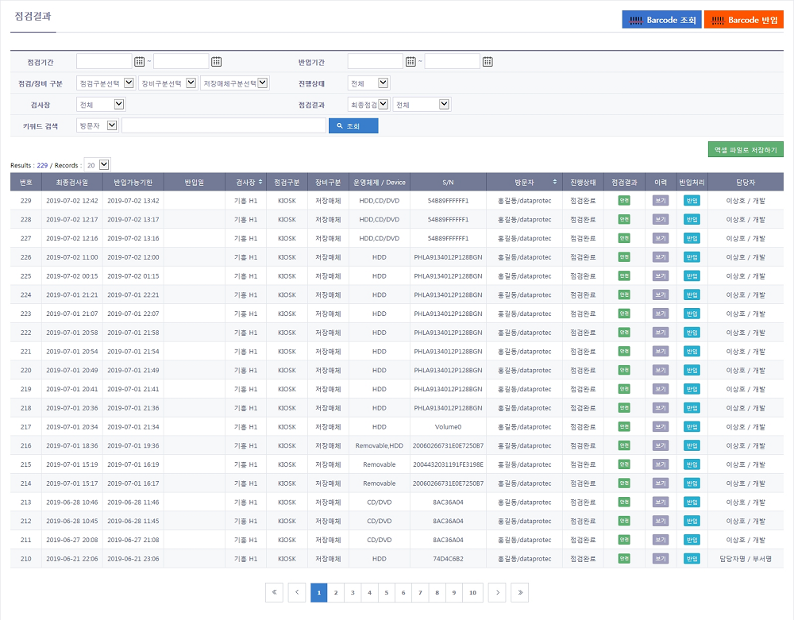
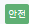
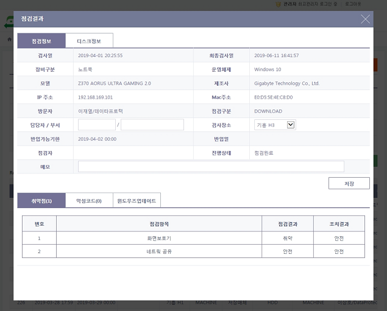
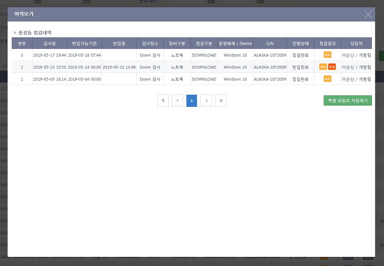

점검결과
방문자 VCS 검사결과 화면 설명입니다.
일반사항
- 방문객의 점검 결과를 확인 할 수 있습니다.
- 방문객의 VCS 검사확인증 바코드를 읽어 점검 결과를 확인하고 반입처리 할 수 있습니다.
1. 점검결과 화면

- 검색 항목
항목 |
상세항목 |
설명 |
점검기간 |
일자1,일자2 |
일자1~일자2 기간동안의 점검내역을 검색합니다. |
반입기간 |
일자1,일자2 |
일자1~일자2 기간동안의 반입된 점검내역을 검색합니다. |
점검구분 |
DOWNLOAD |
방문자가 VCS Client 프로그램을 다운받아 설치하고 검사를 실행한 점검내역을 검색합니다. |
DPTKIOSK |
사업체의 DPT 키오스크에서 검사를 실행한 점검내역을 검색합니다. |
|
KIOSK |
사업체의 검사장 키오스크에서 검사를 실행한 점검내역을 검색합니다. |
|
장비구분 |
노트북 |
검사 장비가 노트북인 점검내역을 검색합니다. |
저장매체 |
검사 장비가 저장 매체인 점검내역을 검색합니다. |
|
저장매체구분 |
HDD |
검사 장비가 HDD 인 점검내역을 검색합니다. |
이동식디스크 |
검사 장비가 이동식 디스크 인 점검내역을 검색합니다. |
|
CD/DVD |
검사 장비가 CD/DVD 인 점검내역을 검색합니다. |
|
기타 |
검사 장비가 그 외의 저장매체 인 점검내역을 검색합니다. |
|
진행상태 |
전체 |
전체 점검내역을 검색합니다. |
점검완료 |
장비 검사가 완료되고 반입전인 점검내역을 검색합니다. |
|
반입완료 |
장비 검사가 완료되고 반입된 점검내역을 검색합니다. |
|
검사장소 |
선택한 검사 장소에서 검사한 점검내역을 검색합니다. |
|
점검결과 |
최종점검 |
장비의 가장 최근 점검내역을 검색합니다. |
전체점검 |
장비의 전체 점검내역을 검색합니다. |
|
취약점발견 |
장비 검사에서 취약점이 발견된 점검내역을 검색합니다. |
|
악성코드발견 |
장비 검사에서 악성코드가 발견된 점검내역을 검색합니다. |
|
키워드 검색 |
방문자 |
방문자 이름으로 검색합니다. |
담당자 |
방문자의 업무 담당자 이름으로 검색합니다. |
|
점검자 |
반입처리한 관리자 이름으로 검색합니다. |
|
S/N |
검사 장비의 시리얼 넘버로 검색합니다. |
|
운영체제 |
검사 장비의 운영체제 이름으로 검색합니다. |
|
모델 |
검사 장비의 모델명으로 검색합니다. |
|
제조사 |
검사 장비의 제조사명으로 검색합니다. |
|
담당부서 |
방문자 업무 담당자의 부서로 검색합니다. |
|
기관 |
검사장의 기관명으로 검색합니다. |
|
업체명 |
방문자의 업체 이름으로 검색합니다. |
|
업체코드 |
방문자의 업체 코드로 검색합니다. |
|
Records |
20,40,60,80,100 |
한 페이지에 보여지는 리스트 개수를 선택합니다. |
- 구성 항목
항목 |
상세항목 |
설명 |
점검결과 |
번호 |
목록 번호를 표시합니다. |
(최종)검사일 |
(가장 최근에 검사한) 장비의 검사일시를 표시합니다. |
|
반입가능기한 |
장비의 반입가능기한을 표시합니다. |
|
반입일 |
장비의 반입일시를 표시합니다. |
|
검사장소 |
장비의 검사 장소를 표시합니다. |
|
점검구분 |
장비의 검사방법을 표시합니다. |
|
장비구분 |
장비의 유형을 표시합니다. |
|
운영체제/ |
장비의 운영체제, 종류를 표시합니다. |
|
S/N |
장비의 시리얼번호를 표시합니다. |
|
방문자 |
방문자 이름과 업체 이름을 표시합니다. |
|
진행상태 |
검사 진행상태(점검완료/반입완료)를 표시합니다. |
|
점검결과 |
장비 점검 결과()를 표시합니다. 점검 결과 아이콘을 누르면 점검결과 상세내용 창이 뜹니다. |
|
이력 |
보기버튼을 누르면 방문자의 검사이력 창이 뜹니다. |
|
반입처리 |
반입(취소)버튼을 누르면 반입(취소)처리됩니다. |
|
담당자 |
방문자의 업무 담당자 이름과 부서를 표시합니다. |
|
버튼 |
엑셀 파일로저장하기 |
점검결과를 엑셀로 내려받기합니다. |
Barcode 조회 |
Barcode 검사결과 조회창이 뜹니다. VCS 검사 확인증의 바코드를 읽어 검사내역을 표시합니다. |
|
Barcode 반입 |
Barcode 검사결과 반입창이 뜹니다. VCS 검사 확인증의 바코드를 읽어 반입처리합니다. |
2. 점검결과 상세내용 창 화면
점검결과 리스트에서 점검결과 아이콘을 누르면 점검결과 상세내용 창이 뜹니다.

- 구성 항목
- 점검결과 상세정보 구성 항목 참조
3. 점검결과 이력 창 화면
점검결과 리스트에서 이력버튼을 누르면 점검결과 이력 창이 뜹니다.

- 구성 항목
항목 |
상세항목 |
설명 |
방문자 점검내역 |
번호 |
목록 번호를 표시합니다. |
검사일 |
장비의 검사일시를 표시합니다. |
|
반입가능기한 |
장비의 반입가능기한을 표시합니다. |
|
반입일 |
장비의 반입일시를 표시합니다. |
|
검사장소 |
장비의 검사 장소를 표시합니다. |
|
장비구분 |
장비의 유형을 표시합니다. |
|
점검구분 |
장비의 검사방법을 표시합니다. |
|
운영체제/ Device |
장비의 운영체제, 종류를 표시합니다. |
|
S/N |
장비의 시리얼번호를 표시합니다. |
|
진행상태 |
검사 진행상태(점검완료/반입완료)를 표시합니다. |
|
점검결과 |
장비 점검 결과(안전/취약/악성)를 표시합니다. |
|
담당자 |
방문자의 업무 담당자 이름과 부서를 표시합니다. |
|
버튼 |
엑셀 파일로 저장하기 |
방문자 점검내역을 엑셀로 내려받기합니다. |
Created with the Personal Edition of HelpNDoc: Produce electronic books easily